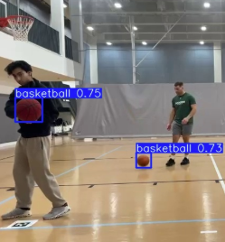
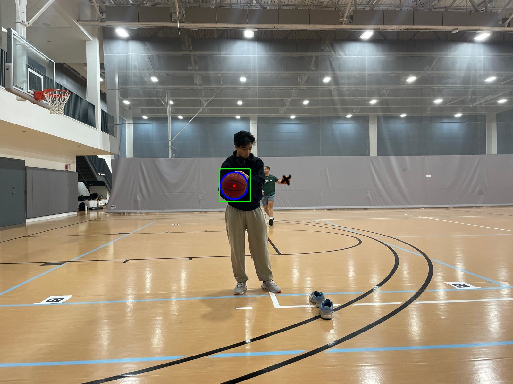
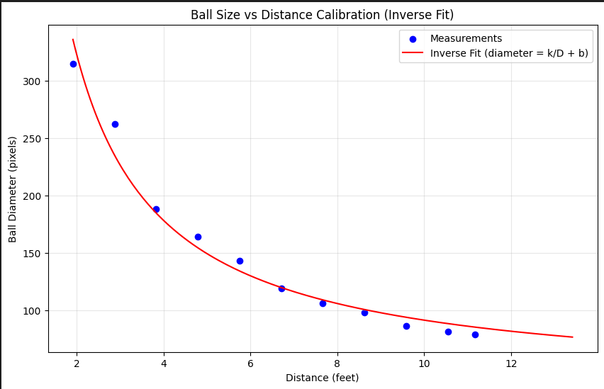

Computer Vision Project
Basketball Tracker
I built a computer vision pipeline that estimates basketball trajectory and kinematics from monocular iPhone video.

Overview
Recovered approximate 3D position, velocity, and acceleration from monocular iPhone footage by combining object detection (YOLO) with geometric refinement (Hough Circle) and a pixel-diameter-to-depth calibration curve. The goal was projective recovery of ball kinematics to assess shot trajectories.
Detection & geometric refinement
- Started with HSV/color segmentation, which failed under changing lighting and scene conditions.
- Trained a YOLOv11n detector on basketball images; iteratively generated and corrected frames to improve performance on distant and partially occluded balls.
- Used Hough Circle Transform to refine center & diameter estimates because bounding boxes alone were too loose for geometric depth estimation.

Depth calibration & 3D pipeline
ArUco tags were attempted and proved unreliable; the final approach used the apparent basketball diameter in pixels with a calibration curve to estimate depth. We photographed the ball at a fixed x/y position every foot across the usable range, measured the real depth for each frame, and compared it against the detected basketball diameter in pixels. Combined with YOLO/Hough x,y, this produced per-frame x,y,z positions that could be converted into trajectories, velocities, and accelerations.


Kinematics & visualization
From the 3D positions we computed displacement, velocity, and acceleration and rendered overlays and 3D trajectory visualizations. Results are noisy due to monocular depth limits and frame-by-frame detection noise; visual overlays remain the most reliable artifact.
Failure modes & lessons
- Multiple balls in-frame confused the tracker; manual cleaning was sometimes required.
- Monocular depth estimation based on apparent diameter is limited (calibration accurate to ~12 ft); far-field shots exceed reliable calibration range.
- Frame-to-frame depth noise leads to noisy velocity/acceleration estimates; claims of physical accuracy are limited.
- YOLO bounding boxes improve localization but need geometric refinement for quantitative metrics.
Pipeline diagram
Links
The source code for the tracker is available on GitHub.
The hardest part about this project was playing basketball.